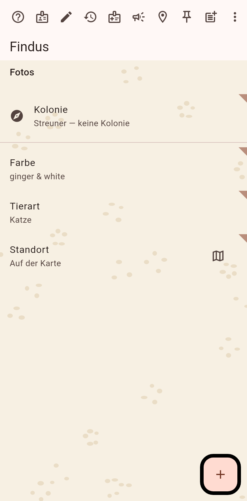
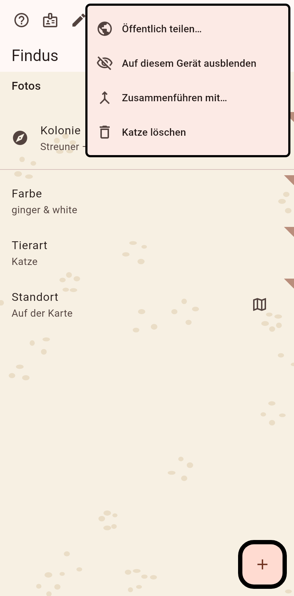
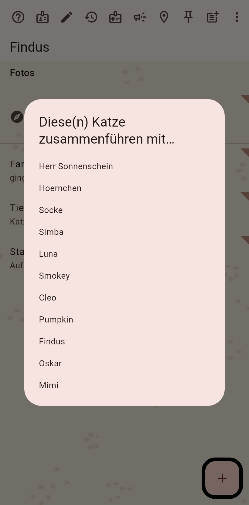
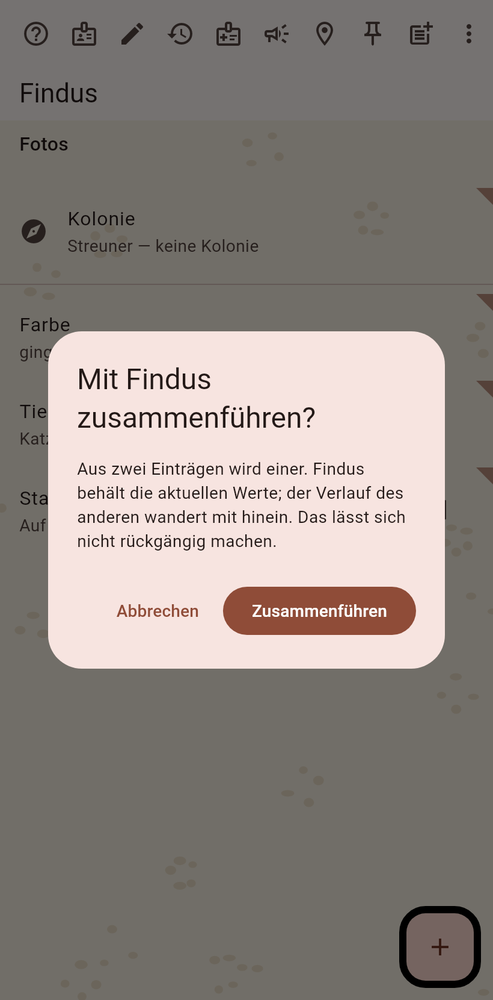

1. Die Dublette
Die Seite des Datensatzes, der gehen wird. Zusammenführen steckt im ⋮-Menü, wenn die Leiste voll ist.

2. Das Menü
"Zusammenführen in…" unter den Aktionen, die nicht auf die Leiste passten.

3. Den Überlebenden wählen
Die anderen Katzen werden angeboten; die gewählte behält ihre Werte und bekommt die Historie der anderen.

4. Bestätigen
Zuerst wird ein Moment festgehalten; das Zusammenführen selbst lässt sich nicht rückgängig machen, deshalb fragt es noch einmal.
